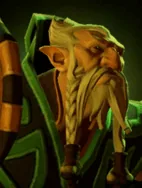
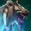

Summon Spirit Bear
Active ability: Activates on Full Mana
Summons a powerful Spirit Bear companion in a nearby vacant square to battle for Lone Druid.
| ★ | ★★ | ★★★ | |
|---|---|---|---|
| SPIRIT BEAR DURATION | 40 | ||
| Cooldown (s) | 60 | ||
| Mana cost | 100 | ||
Syllas lifelong companion is symbiotic with his spirit and heart, coming to aid him in any time of need.
Stats
| ★ | ★★ | ★★★ | |
|---|---|---|---|
| Health | 800 | 1600 | 2800 |
| Mana | 100 | 100 | 100 |
| Armor | 7 | 7 | 7 |
| Magic resistance | 0% | 0% | 0% |
| Attack damage | 50–60 | 100–120 | 200–240 |
| Attack interval (s) | 1.3 | 1.3 | 1.3 |
| Attack range | 400 | 400 | 400 |
| Move speed | 500 | 500 | 500 |
 Beast · Power of the Wild
Beast · Power of the Wild
- (2) All allies, including summons, deal +10% attack damage.
- (4) All allies, including summons, deal another +25% attack damage (+35% in total).
- (6) Physical damage from your allies stacks a debuff on the target, up to 10 stacks. Each stack makes it take +10% physical damage, up to +100%.
 Druid · Synergy
Druid · Synergy
When you make a ★★★ Druid, the remaining copies of that Druid are not removed from the shared pool.
- (2) Two identical Druid★ combine into a Druid★★. An Io★ plus one Druid★ also combine.
- (4) Two identical Druid★★ combine into a Druid★★★. An Io★★ plus one Druid★★ also combine.
- (6) Two identical Druid★★★ combine into the Altar of Spirits. It gets Altar Power stacks equal to the Druid★★★'s level (5-8) and removes all Druids from the shared pool. Each stack means 10% less damage taken and 10% more damage dealt, multiplying (8 stacks: 43% damage taken, 214% damage dealt). At battle start the Altar shares its stacks with nearby friendly Druids it tethers.